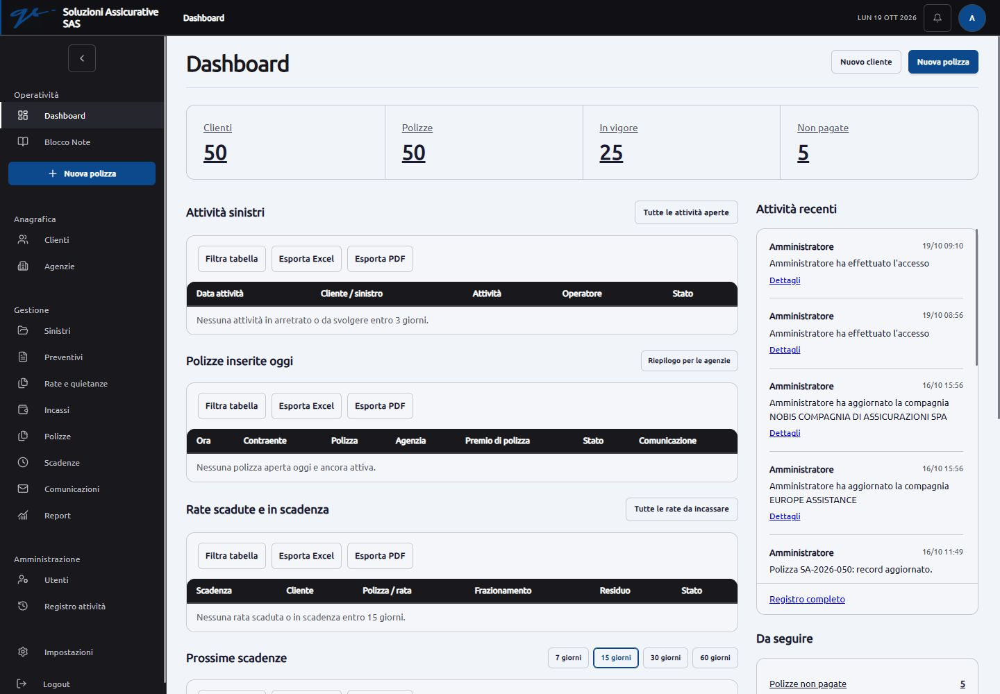
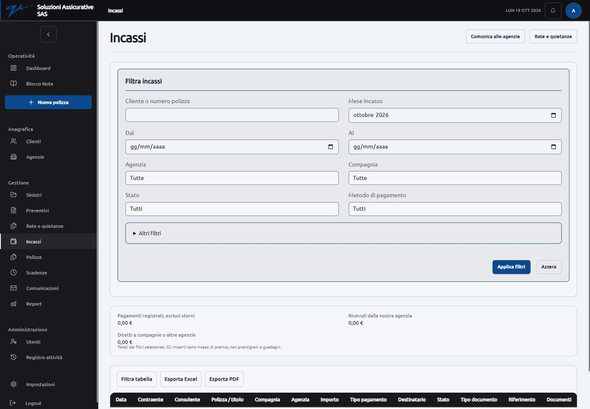
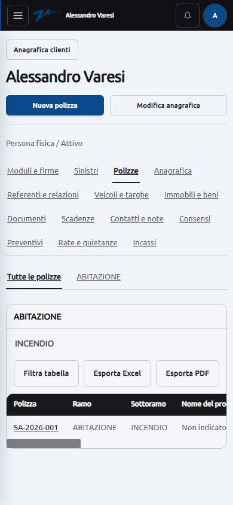
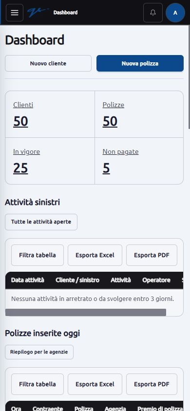
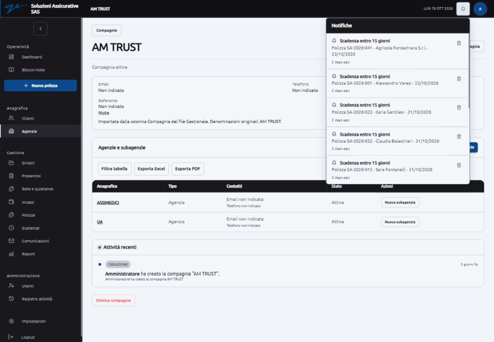

Polizze aperte oggi
Ora, contraente, polizza, agenzia, premio e stato della comunicazione. Collegamento al riepilogo cumulativo.
Quando non ci sono risultati: una riga sintetica, senza intestazione tabella e comandi di esportazione vuoti.
Soluzioni Assicurative SAS · 19 ottobre 2026
La priorità è rendere più chiaro cosa consultare e cosa fare in ogni pagina. Le superfici molto simili, i filtri estesi e le sezioni vuote producono una gerarchia debole. Le pagine controllate si adattano alla larghezza disponibile, ma alcune richiedono troppo scorrimento.
Verifica eseguita nel browser interno, con l’accesso amministratore effettuato dall’utente. Sono state aperte 70 URL di pagine e varianti. Tutte le 16 destinazioni principali della sidebar sono state controllate a 1440 e 390 px; la dashboard anche a 768 px. La larghezza del documento non supera il viewport nelle osservazioni registrate. Questo dato non sostituisce la prova di ogni contenuto o di un telefono fisico.
Le tabelle larghe usano scorrimento interno. Sono state provate apertura e chiusura del menu mobile, apertura delle notifiche, ricerca e selezione cliente, dipendenze ramo/sottoramo e compagnia/agenzia, filtro per stato e frazionamento. Il registro degli errori JavaScript consultato non ha restituito errori; non è una certificazione dell’intera applicazione.
Non sono stati modificati dati di clienti, contratti, incassi, consensi o configurazioni email. La sessione può registrare i normali accessi. La revisione grafica proposta sotto non è ancora applicata; il tema personale è rimasto invariato.
Questo rapporto integra l’audit con le correzioni funzionali del 19 ottobre e il rapporto del 18 ottobre. Non ripete tutte le prove di autorizzazione e sicurezza. Non dichiara il gestionale privo di vulnerabilità.
| Priorità | Area | Riscontro | Intervento proposto |
|---|---|---|---|
| Alta | Dashboard | Le sezioni vuote Sinistri, Polizze di oggi e Rate occupano il primo schermo; la tabella con le prossime scadenze inizia circa a 1.050 px nella vista desktop. | Mettere in evidenza lavoro odierno e urgenze. Ridurre ogni sezione senza risultati a una riga, con il collegamento alla pagina completa. Conservare le attività a destra su desktop. |
| Alta | Filtri e risultati | In Incassi la tabella inizia circa a 970 px; anche Rate e Preventivi dedicano troppo spazio ai filtri. I controlli di ricerca della pagina e quelli della tabella si sovrappongono concettualmente. | Usare una barra comune con i criteri frequenti e un pulsante per quelli avanzati. Separare chiaramente ricerca sul registro ed eventuale filtro sui risultati. |
| Alta | Nuova polizza | La pagina mostra l’intero modulo anche quando il selettore dei preventivi approvati è vuoto. La distinzione tra nuova stipula e registrazione di un contratto esistente arriva dopo il selettore. | Chiarire subito il tipo di inserimento. Per una nuova stipula guidare prima al preventivo approvato; mantenere separato l’inserimento motivato di una polizza esistente. |
| Media | Gerarchia visiva | Il tema attivo usa #f1f5f9 per lo sfondo e #f4f6f9 per i pannelli: sono molto simili. Tutti i riquadri hanno quasi lo stesso peso visivo. | Distinguere intestazioni, area dati e azioni con tipografia, spaziatura e bordi coerenti. Conservare il tema personale; un cambiamento dei suoi colori va scelto, non sovrascritto. |
| Media | Scheda cliente | Quattordici collegamenti sullo stesso livello; sullo smartphone la navigazione occupa circa 161 px prima dei tab dei rami. | Tenere subito raggiungibili Polizze, Anagrafica, Documenti e Scadenze. Raggruppare le sezioni secondarie in un menu esplicito, conservando i tab per ramo. |
| Media | Tabelle su smartphone | Nelle viste controllate la pagina non sborda, ma tabelle di 10–13 colonne richiedono molto scorrimento laterale; stato, premio e scadenza restano spesso fuori vista. | Definire per ciascuna tabella le colonne operative principali; mantenere le altre consultabili e tutte esportabili. Segnalare chiaramente lo scorrimento orizzontale. |
| Media | Moduli e densità | Input già compatti, ma diversi moduli hanno pannelli annidati, molte righe introduttive e spazi ampi tra gruppi. I campi meno frequenti pesano quanto quelli necessari. | Ridurre contenitori e margini duplicati, mantenendo i box per argomento. Sul telefono conservare aree di tocco e testo leggibili. |
| Media | Agenzie e compagnie | Molte celle ripetono “Non indicato”; nei dettagli delle compagnie compaiono ancora note tecniche sull’importazione. | Semplificare gli stati vuoti e spostare la provenienza dei dati in un dettaglio amministrativo. Nessun contatto va inventato. |
| Media | Notifiche e registro attività | Il menu notifiche si apre ed è coerente con il tema, ma usa date relative in inglese. Nel registro alcune descrizioni ripetono la stessa attività due volte. | Uniformare lingua italiana e presentazione di autore, azione, oggetto e data; mantenere i dettagli di audit consultabili. |
| Media | Nuclei familiari e aliquote | La creazione del nucleo presenta molti componenti già elencati; il modulo delle aliquote elenca tutti i rami e sottorami. I moduli sono lunghi anche prima della selezione. | Aggiungere ricerca e selezione mirata, lasciando visibili i gruppi scelti. Non nascondere condizioni già impostate. |
| Da chiarire | Catalogo assicurativo | Restano voci da verificare e la denominazione “INTEGRAZIONE MOBILITÔ. Sono presenti sia EUROPE sia EUROPE ASSISTANCE. | Confermare le denominazioni e le eventuali equivalenze prima di correggere o accorpare dati. Non dedurre che due compagnie siano la stessa. |
| Da configurare | Moduli da firmare | “Prepara moduli” per la polizza visitata mostra che non ci sono modelli approvati. La lista distingue modelli precedenti e modelli da revisionare. | Verificare versioni e destinazioni e abilitare i modelli effettivamente utilizzabili. Il flusso con generazione e firme non può essere dichiarato completato sulla base della sola schermata. |
| Da configurare | Invio email | La configurazione email risulta non abilitata. Le schermate di comunicazione e storico si aprono. | Completare la configurazione quando saranno disponibili i parametri e provare un invio a un destinatario di test concordato. Nessuna email è stata inviata durante l’audit. |
| Da riprovare con dati | Rate, incassi, preventivi e sinistri | Nel gestionale visitato i registri risultano vuoti. Sono stati controllati elenchi, moduli e collegamenti, senza creare movimenti. | Verificare i flussi completi su dati di prova isolati: approvazione con allegato, emissione, rinnovo, pagamento, storno, comunicazione e chiusura del sinistro. |
| Bassa | Testi e nomenclatura | Residui come “1 polizze”, “1 sottorami”, etichette tecniche e vecchi ruoli rendono alcune pagine meno comprensibili. | Uniformare singolari, etichette e microtesti. La matrice dei ruoli richiede una decisione distinta dalle correzioni grafiche. |
Conservare logo, sidebar scura, blu dei pulsanti e impostazioni personali. Il cambiamento principale riguarda ordine, densità e separazione dei contenuti. Lo schema seguente descrive la disposizione proposta, non mostra dati nuovi né una schermata già implementata.
Ora, contraente, polizza, agenzia, premio e stato della comunicazione. Collegamento al riepilogo cumulativo.
Quando non ci sono risultati: una riga sintetica, senza intestazione tabella e comandi di esportazione vuoti.
Arretrati e scadenze vicine prima delle informazioni secondarie. Intervallo selezionabile e accesso al registro completo.
Mostrare le attività presenti, con evidenza delle scadute. Stato vuoto compatto quando non ci sono attività da svolgere.
Registro a destra su desktop: autore, azione, oggetto e orario. Dettagli completi raggiungibili con un collegamento.
Richieste da seguire e documenti mancanti, con accesso diretto alla scheda interessata.
Su smartphone questa colonna segue il lavoro operativo. I riepiloghi già esistenti restano collegamenti sintetici, senza aggiungere nuove statistiche.
Successivamente applicare la stessa barra filtri a Clienti, Agenzie, Polizze, Rate, Incassi e Report; poi semplificare la navigazione delle schede e uniformare i moduli. I tab per ramo delle polizze restano presenti.





L’inventario indica le larghezze verificate per ogni URL. Le visite non equivalgono al collaudo di tutti i salvataggi, stati e permessi possibili. Gli elenchi senza dati e i dettagli non disponibili sono indicati nei limiti sopra.